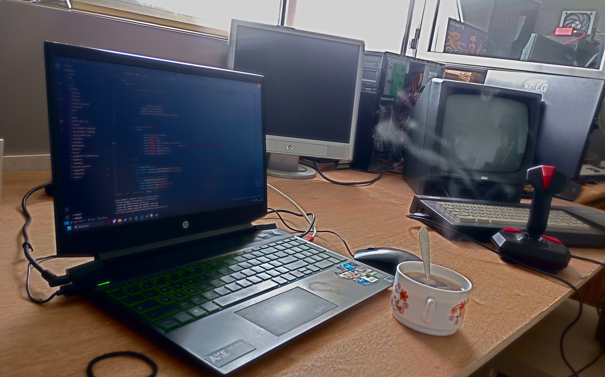

Liens utiles pour comprendre ma formation
Le BUT informatique a pour objectif de former des développeurs à quelque chose de plus subtil Que le développement seul. Nous étudions un large panel des facettes du métier de développeur en étudiant aussi bien les aspects techniques que non techniques.
